library(ggcube)
library(patchwork)
theme_set(theme_gray())
theme_update(axis.text = element_blank(),
axis.title = element_blank())Lighting modifies the fill and/or color of polygon faces based on their orientation relative to a light source, giving surfaces and volumes a sense of depth and shape. ggcube’s lighting system only renders form shadows, not cast shadows. Lighting can be applied to any polygon-based 3D layer — surfaces, hulls, bars, voxels, and polygon text — but is useful mainly for layers where polygon orientation varies.
This vignette covers how to control what parts of your plot lighting is applied to, how lighting model parameters change the visual qualities of the lighting, how to change the direction of the light source, how to control how the underside of a polygon is lit, and how to add lighting-aware guides to your plot.
We’ll use a common base plot throughout. Here it is with default lighting:
p <- ggplot(sphere_points, aes(x, y, z)) +
geom_hull_3d(fill = "#9e2602", color = "#5e1600") +
coord_3d(scales = "fixed")
p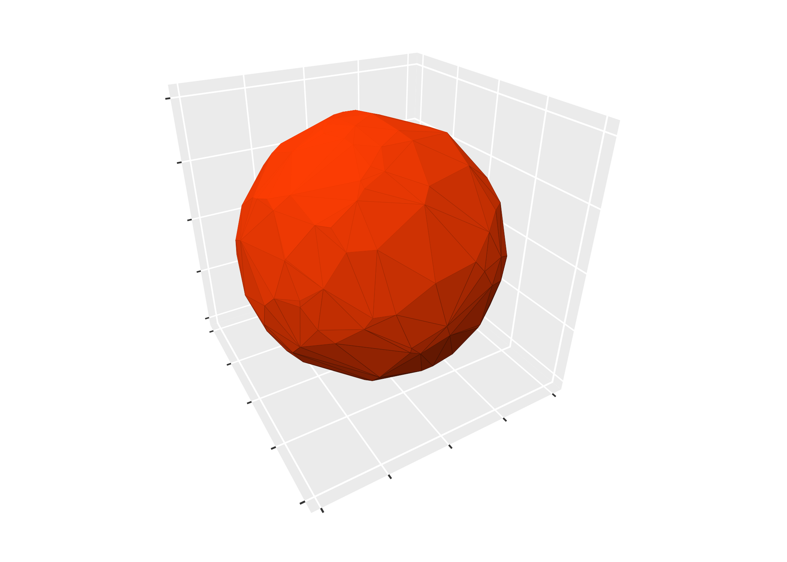
Lighting targets
Lighting can be set at two levels:
-
Coord-level:
coord_3d(light = light(...))applies to all layers in the plot. -
Layer-level:
geom_*_3d(light = light(...))overrides the coord-level setting for that layer.
Use light = "none" to disable lighting entirely, or
light = NULL in a layer to inherit the coord-level setting
(the default layer behavior). Here we add a second layer to our plot,
and override the inherited light settings to disable lighting for this
layer:
p + geom_hull_3d(aes(x = x + 2.5), fill = "#9e2602", color = "#5e1600",
light = "none")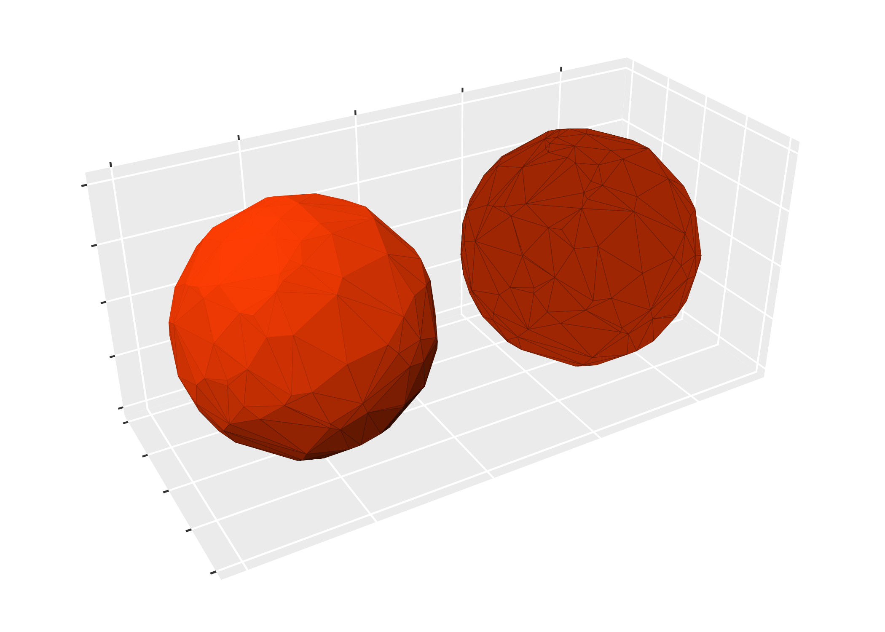
The fill and color parameters control which
aesthetics get modified by lighting. By default both are
TRUE:
(p + ggtitle("fill + color (default)")) +
(p + coord_3d(light = light(fill = TRUE, color = FALSE)) +
ggtitle("fill only"))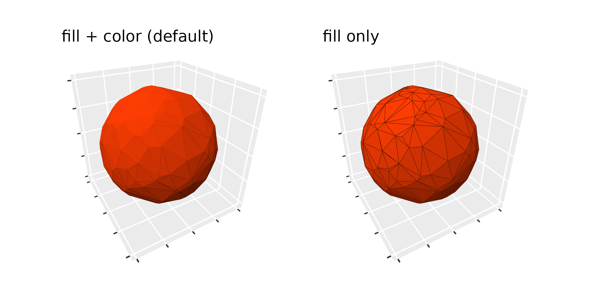
Lighting works with both solid and aesthetically-mapped colors:
ggplot(sphere_points, aes(x, y, z)) +
geom_hull_3d(aes(fill = x, color = x)) +
scale_fill_viridis_c() +
scale_color_viridis_c() +
guides(fill = guide_colorbar_3d()) +
coord_3d(light = light("direct"))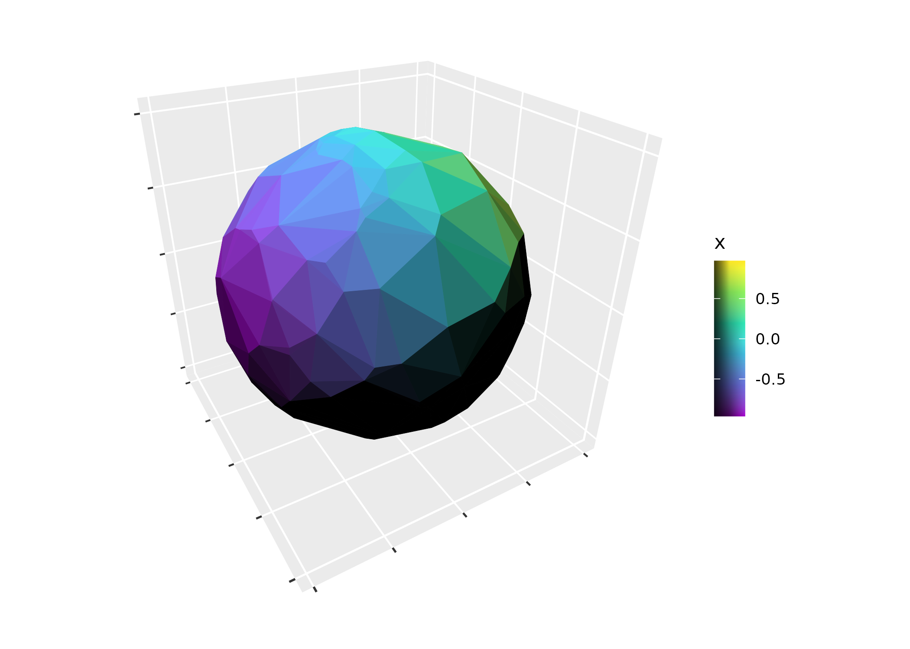
Light qualities
Lighting methods
The method parameter controls the lighting model:
-
"diffuse"(default): Soft, atmospheric lighting. Only surfaces pointing directly away from the light source are fully dark. -
"direct": Hard lighting. All surfaces angled beyond 90 degrees from the light are fully dark. -
"rgb": Maps surface orientation to RGB color space, replacing the base colors entirely.
(p + coord_3d(light = light(method = "diffuse")) + ggtitle('"diffuse" (default)')) +
(p + coord_3d(light = light(method = "direct")) + ggtitle('"direct"')) +
(p + coord_3d(light = light(method = "rgb")) + ggtitle('"rgb"')) +
plot_layout(ncol = 3)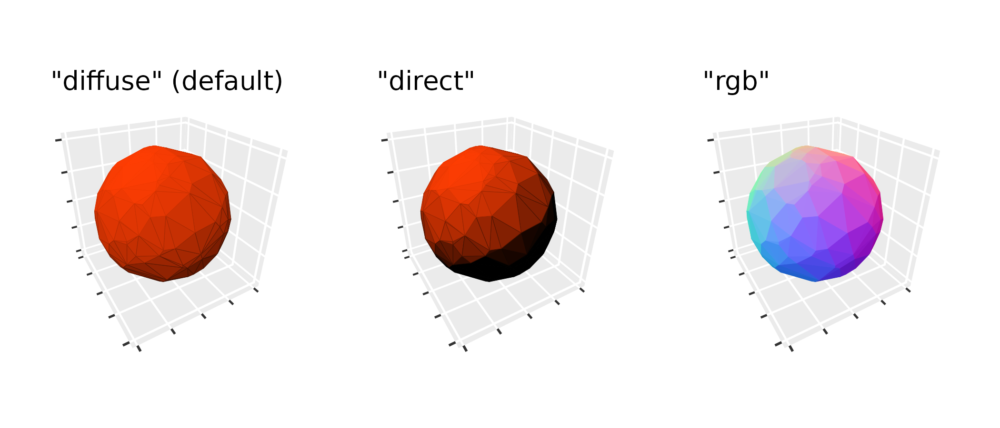
Color modes
The mode parameter controls how lighting modifies
colors. This applies to the "diffuse" and
"direct" methods (not "rgb"). There are two
color modes:
-
"hsv"(default): Modifies the value component of HSV color. Highlights preserve hue; shadows fade to black. -
"hsl": Modifies the lightness component of HSL color. Highlights fade to white; shadows fade to black.
The two modes give identical results for grayscale base colors.
(p + coord_3d(light = light(mode = "hsv")) +
ggtitle('"hsv" (default)')) +
(p + coord_3d(light = light(mode = "hsl")) +
ggtitle('"hsl"'))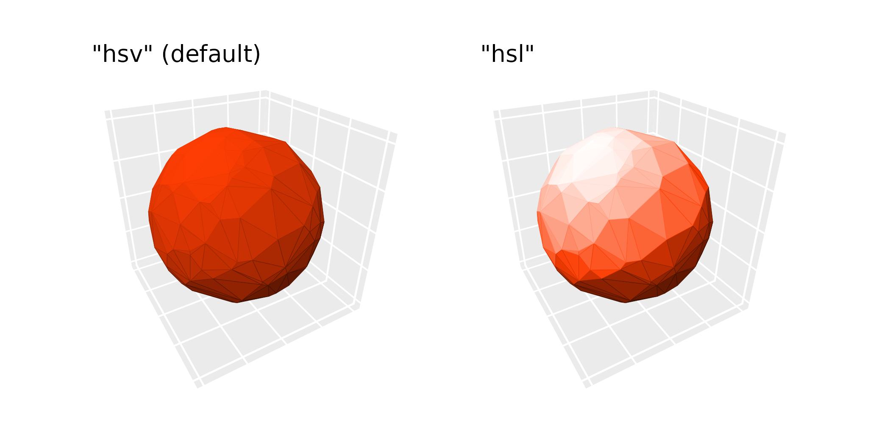
Contrast strength
The contrast parameter scales the intensity of lighting
effects. Values less than 1 give subtler effects; values greater than 1
give more dramatic ones:
(p + coord_3d(light = light(mode = "hsl", contrast = 0.5)) +
ggtitle("contrast = 0.5")) +
(p + coord_3d(light = light(mode = "hsl", contrast = 1)) +
ggtitle("contrast = 1 (default)")) +
(p + coord_3d(light = light(mode = "hsl", contrast = 1.5)) +
ggtitle("contrast = 1.5")) +
plot_layout(ncol = 3)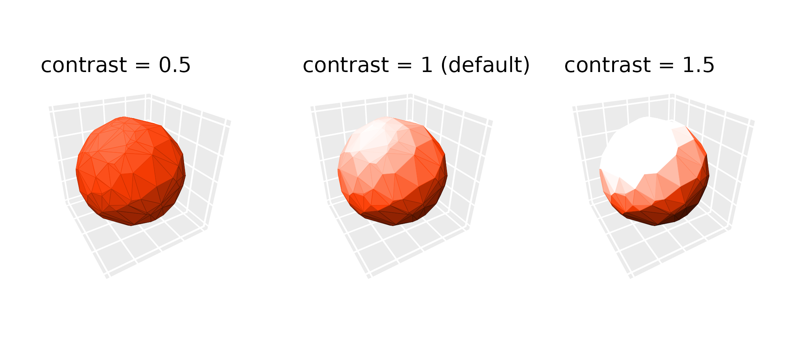
Light sources
Direction and anchoring
The direction parameter is a length-3 vector specifying
where light comes from; for example,
direction = c(0, -1, 0) lights the plot from the negative y
direction. The anchor parameter controls whether this
direction is relative to the data axes or the camera:
-
anchor = "scene"(default): Direction is relative to the data axes and rotates with the plot.direction = c(1, 0, 0)always lights surfaces facing the “xmax” face. -
anchor = "camera": Direction is fixed relative to the viewing pane.direction = c(1, 0, 0)always lights surfaces facing the right side of the plot, regardless of rotation.
(p + coord_3d(light = light("direct", direction = c(0, -1, 0))) +
ggtitle('anchor = "scene"')) +
(p + coord_3d(light = light("direct", direction = c(0, -1, 0), anchor = "camera")) +
ggtitle('anchor = "camera"'))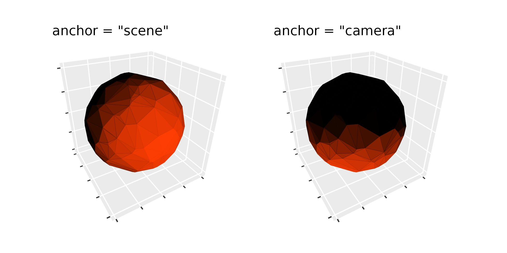
Positional lighting
In addition to directional lighting (parallel rays from a direction),
ggcube also supports positional lighting from a point source. Use
position instead of direction to specify a
light source location in data coordinates. Setting
distance_falloff = TRUE applies inverse-square intensity
falloff from the light source position.
ggplot(mountain, aes(x, y, z)) +
stat_surface_3d(fill = "red", color = "red") +
coord_3d(
light = light(position = c(.5, .7, 95), distance_falloff = TRUE,
mode = "hsl", contrast = .9),
ratio = c(1.5, 2, 1))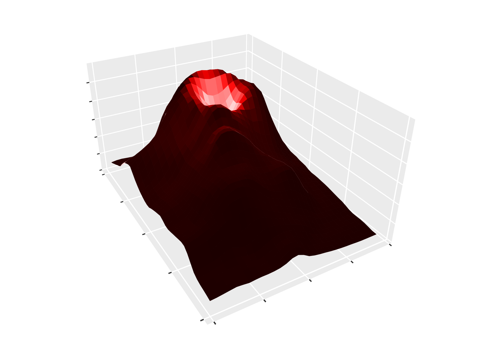
Backface lighting
A backface is the side of a polygon facing the underside of a surface
or the inside of a volume. By default, backfaces receive inverted
lighting relative to frontfaces (backface_scale = -1),
creating strong visual contrast between the two sides. Setting
backface_scale = 1 lights backfaces the same as frontfaces.
Modifying backface_offset to uniformly darkens or brightens
all backfaces.
pb <- ggplot() +
geom_function_3d(fun = function(x, y) x^2 + y^2,
xlim = c(-3, 3), ylim = c(-3, 3),
fill = "steelblue", color = "steelblue")
(pb + coord_3d(pitch = 0, roll = -70, yaw = 0,
light = light(mode = "hsl")) +
ggtitle("default:\nbackface_scale = -1\nbackface_offset = 0")) +
(pb + coord_3d(pitch = 0, roll = -70, yaw = 0,
light = light(backface_scale = 1, mode = "hsl")) +
ggtitle("\nbackface_scale = 1\nbackface_offset = 0")) +
(pb + coord_3d(pitch = 0, roll = -70, yaw = 0,
light = light(backface_scale = 1, mode = "hsl",
backface_offset = -.5)) +
ggtitle("\nbackface_scale = 1\nbackface_offset = -0.5")) +
plot_layout(nrow = 1)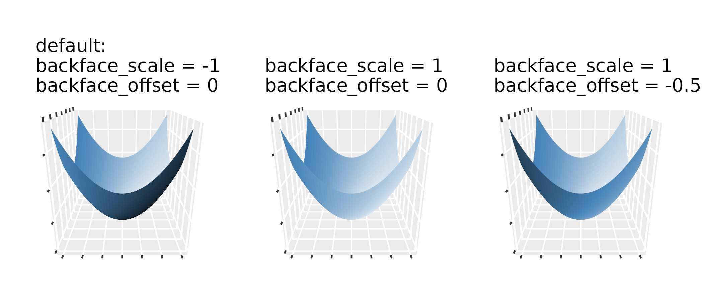
3D guides
When lighting is active, standard color guides don’t reflect the
range of shaded colors visible in the plot. ggcube provides
guide_colorbar_3d() and guide_legend_3d() to
create guides that show the full shading gradient:
ggplot(mountain, aes(x, y, z, fill = z)) +
stat_surface_3d(light = light(mode = "hsl", direction = c(1, 0, 0))) +
guides(fill = guide_colorbar_3d()) +
scale_fill_gradientn(colors = c("tomato", "dodgerblue")) +
coord_3d(ratio = c(2, 3, 1.5))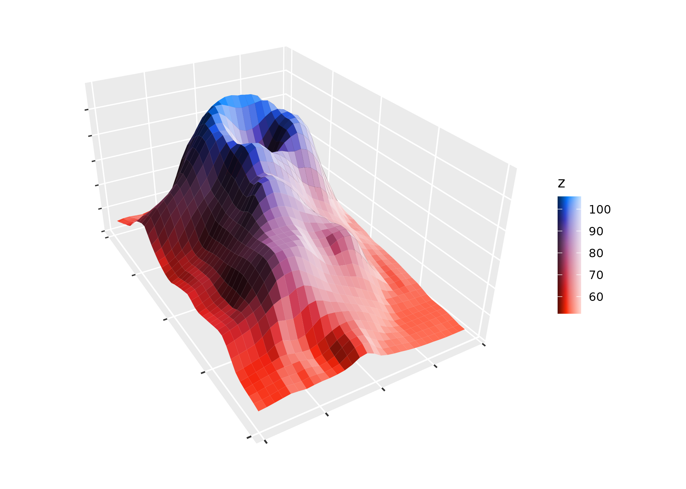
ggplot(mountain, aes(x, y, z, fill = x > .5, group = 1)) +
stat_surface_3d(light = light(mode = "hsl", direction = c(1, 0, 0))) +
guides(fill = guide_legend_3d()) +
coord_3d(ratio = c(2, 3, 1.5))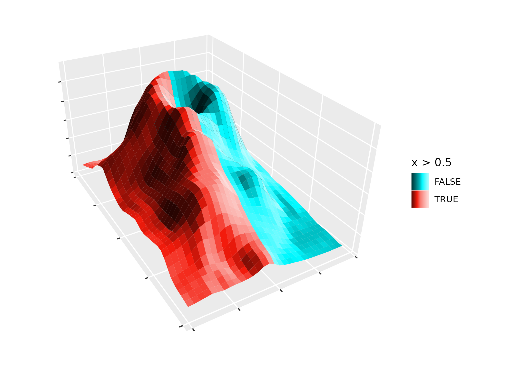
Both guides accept shade_range to control the range of
shading shown (a length-2 vector in the range -1 to 1), and
reverse_shade to flip the gradient direction.
Note that when fill and color map to the same variable, ggplot2
creates a shared scale. In this case, apply the 3D guide via
guides(fill = guide_colorbar_3d()), not via the color
guide.